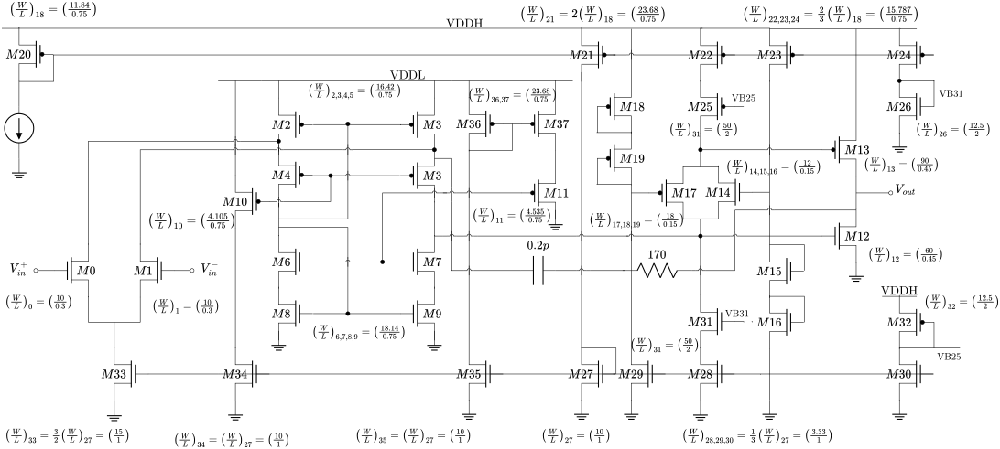

Car Horn PCB
Custom Mixed-Signal Audio PCB for a solar vehicles car horn. Includes an ESP32 dev board, CAN communication, and digital to analog audio conversion and applificaiton.
View Project →
Analog IC LCD Driver
Custom two stage analog op-amp designed to drive high capacitance LCD pixels. Achieved fast settling and low power with a PVT insensitive design.
View Project →
Gen X Solar Car Electrical System
Respun and upkept boards and systems on Gen X solar car. Successfully led electrical team through 2000+ miles of driving in terms of technical and safety leadership.
View Project →